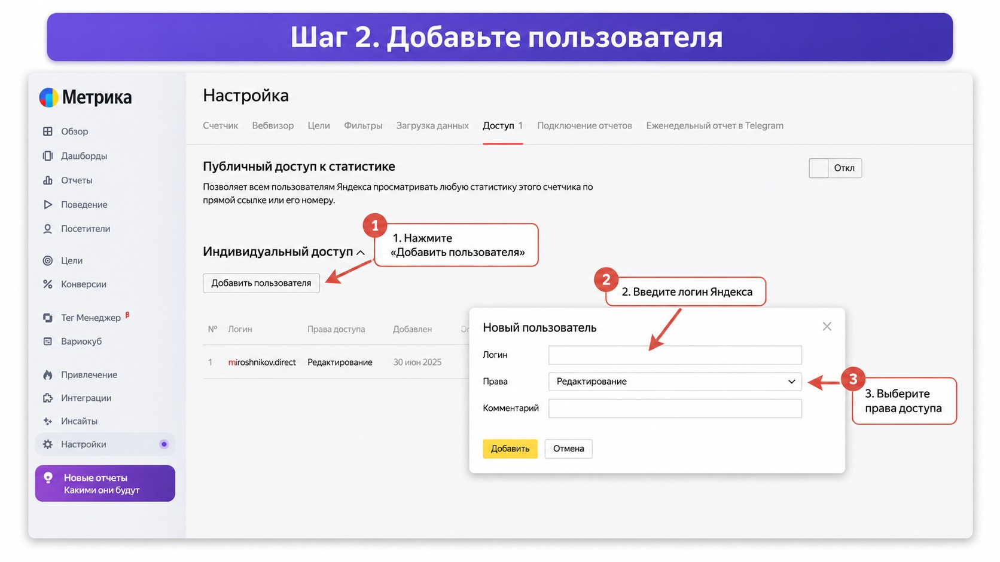

Блог о платном трафике
Как дать доступ к Яндекс Метрике
Чтобы дать другому человеку доступ к Яндекс Метрике, не нужно передавать ему пароль от своего аккаунта. В Метрике есть отдельная система прав: вы указываете логин пользователя и выбираете, что именно он сможет делать со счетчиком.
Если коротко: откройте нужный счетчик, перейдите в «Настройки» -> «Доступ» -> «Добавить пользователя», укажите его логин Яндекса и выберите права. Пользователь должен иметь Яндекс ID и быть авторизован в Яндексе.
Как добавить пользователя в Яндекс Метрику
Откройте Яндекс Метрику и выберите счетчик сайта, к которому хотите предоставить доступ.
Дальше порядок такой:
- В левом меню откройте «Настройки».
- Перейдите в раздел «Доступ».
- В блоке «Индивидуальный доступ» нажмите «Добавить пользователя».
- Укажите логин пользователя в Яндексе.
- Выберите права доступа.
- Нажмите «Добавить», затем сохраните изменения.
Именно этот путь показан на скриншоте ниже.

Обратите внимание на один момент: нужен именно логин аккаунта Яндекса, которому вы выдаете доступ. Передавать пароль от своей учетной записи не требуется.
Официальная инструкция Яндекса описывает тот же порядок: «Настройки» -> «Доступ» -> «Добавить пользователя».
Какие права доступа выбрать
Сейчас в Яндекс Метрике есть три основных уровня индивидуального доступа: «Только просмотр», «Аналитика» и «Редактирование». У них заметно отличаются возможности.
Только просмотр
Пользователь может смотреть статистику и настройки счетчика, а также сохранять отчеты. Менять настройки счетчика, управлять целями и сегментами он не сможет.
Такой вариант подойдет, например, если нужно показать статистику руководителю, клиенту или сотруднику, которому данные нужны только для просмотра.
Аналитика
Права «Аналитика» позволяют работать с отчетами, создавать цели и сегменты, но не дают полноценного доступа к настройкам счетчика.
Этот вариант подходит аналитикам и другим специалистам, которым нужно работать с данными, но не требуется управлять самим счетчиком.
Редактирование
При выборе «Редактирование» пользователь получает практически полный доступ к счетчику. Он может менять его настройки и работать с большинством функций Метрики. При этом удалить счетчик или перенести его на другой аккаунт такой пользователь не сможет.
Если я подключаюсь к проекту как специалист по Яндекс Директу и должен полноценно работать с аналитикой, обычно нужен именно этот вариант. В процессе может потребоваться настроить цели, проверить цель в Яндекс Метрике или изменить другие параметры Метрики.
На втором скриншоте показано добавление пользователя с правами «Редактирование».

Какой доступ дать директологу или агентству
Если специалисту нужно только посмотреть статистику рекламных кампаний, полного доступа может и не потребоваться.
Но на практике при нормальной работе с Яндекс Директом часто приходится проверять цели, настройки счетчика и корректность аналитики. Поэтому специалисту, который отвечает за рекламу и аналитику, обычно удобнее сразу выдать права «Редактирование».
Это безопаснее, чем передавать логин и пароль от основного аккаунта. При индивидуальном доступе специалист работает под своим Яндекс ID, а владелец счетчика в любой момент может изменить его права или удалить доступ.
Настройка аналитики для меня часть работы над рекламой: что именно я делаю с кабинетом и счетчиком, видно в разделе что входит в работу над рекламой.
Как забрать доступ к Метрике
Если сотрудник или подрядчик больше не работает с проектом, доступ лучше удалить.
Для этого снова откройте «Настройки» -> «Доступ».
Найдите нужный логин в списке индивидуальных доступов и удалите его либо измените уровень прав. Управление индивидуальными доступами выполняется в этом же разделе Метрики.
Я советую периодически просматривать этот список. На старых проектах там иногда остаются сотрудники и подрядчики, которые давно не имеют отношения к сайту.
Чем индивидуальный доступ отличается от представительского
Для обычной передачи одного счетчика нужен индивидуальный доступ. Представительский доступ работает иначе.
Представитель получает права на все счетчики аккаунта, включая возможность просмотра, редактирования и удаления счетчиков. Более того, новые счетчики, которые появятся в аккаунте позже, тоже будут доступны представителю.
Поэтому для разового подключения директолога, аналитика или агентства к конкретному сайту я бы не использовал представительский доступ. Проще и безопаснее добавить человека непосредственно в нужный счетчик.
Представители удобнее в ситуации, когда один человек действительно должен управлять всем аккаунтом Метрики и всеми счетчиками внутри него. В рекламном кабинете логика похожая, там это разбирается отдельно: как добавить представителя в Яндекс Директ.
Можно ли дать доступ только к части статистики
Да. В Метрике существуют фильтры доступа. С их помощью можно показать пользователю только данные, которые соответствуют заданным условиям, например трафик определенной рекламной кампании или географии.
Фильтр можно назначить пользователям с правами «Только просмотр» или «Аналитика». В отчетах такой пользователь будет видеть только данные, которые проходят через настроенный фильтр.
Для большинства обычных проектов эта настройка не нужна, но она полезна, когда доступ к общей статистике сайта предоставлять нельзя.
Можно ли открыть публичный доступ к Яндекс Метрике
В Метрике есть и публичный доступ. После его включения появляется ссылка, по которой авторизованные пользователи Яндекса смогут смотреть статистику счетчика. Но часть данных при таком способе скрывается: например, отчеты Яндекс Директа, электронной коммерции, сквозной аналитики, конверсий и записи Вебвизора.
Поэтому для подрядчика или сотрудника лучше использовать индивидуальный доступ по логину, а не публичную ссылку.
Частые вопросы
Какой логин нужно указывать при добавлении пользователя?
Логин Яндекса того человека, которому вы хотите открыть счетчик. У пользователя должен быть аккаунт Яндекса.
Нужно ли давать специалисту пароль от Яндекса?
Нет. Для работы с Метрикой достаточно выдать доступ на его собственный аккаунт.
Какие права дать директологу?
Если директолог только анализирует статистику, можно ограничиться более низким уровнем доступа. Если он отвечает за настройку аналитики и счетчика, обычно нужны права «Редактирование».
Может ли пользователь с правами «Редактирование» удалить счетчик?
Нет. Индивидуальный доступ «Редактирование» позволяет практически полностью управлять счетчиком, но удалить его или перенести на другой аккаунт пользователь не сможет.
Как дать доступ сразу ко всем счетчикам Метрики?
Для этого существует представительский доступ. Представитель получает доступ ко всем счетчикам аккаунта, в том числе к новым счетчикам, которые будут созданы позже.
Коротко
Если вам нужно дать доступ к Яндекс Метрике сотруднику, директологу или подрядчику, используйте индивидуальный доступ:
«Настройки» -> «Доступ» -> «Добавить пользователя» -> укажите логин -> выберите права.
Для просмотра статистики достаточно ограниченных прав. Для специалиста, который отвечает за полноценную настройку Метрики, чаще нужны права «Редактирование». Пароль от своего аккаунта передавать не нужно.